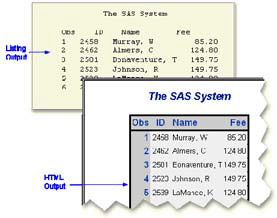
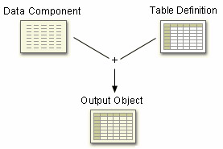
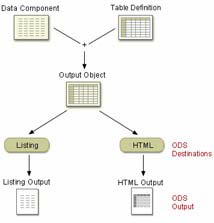
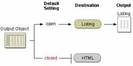
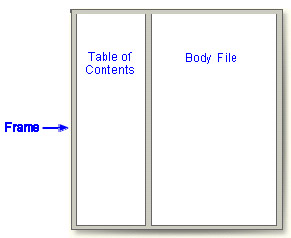
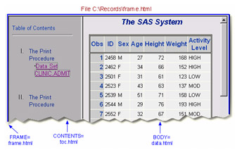
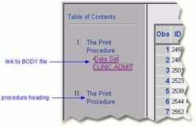
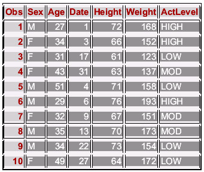

Overview
Introduction
In previous chapters, you've seen both traditional SAS listing output and HTML output. When you set options to create HTML output, SAS uses Output Delivery System (ODS) statements to generate the output.
Using ODS, you can create, customize, and manage HTML output in any operating environment by submitting programming statements. After you create HTML files, you can view them using Internet Explorer, Netscape Navigator, or any Web browser that fully supports HTML 3.2.
This chapter shows you how to create and view HTML output using ODS. You also learn how to apply styles to ODS output.
| Warning | By default, all code that you submit to SAS Enterprise Guide has ODS statements included to create HTML output. Before you submit your own ODS statements, you must turn off this default behavior. The practice programs on your companion CD include instructions for turning off the default behavior. |
|---|

Objectives
In this chapter, you learn to
- open and close ODS destinations.
- create a simple HTML file with the output of one or more procedures.
- create HTML output with a linked table of contents in a frame.
- use options to specify links and file paths.
- view HTML output.
- apply styles to HTML output.
The Output Delivery System
Before you learn to write ODS programming statements, it's helpful to understand a little about ODS.
Advantages of ODS
ODS gives you formatting options and makes procedure output much more flexible. With ODS, you can easily create output in a variety of formats, including
- HTML output
Obs ID Name Fee 1 2458 Murray, W 85.20 2 2462 Almers, C 124.80 3 2501 Bonaventure, T 149.75 4 2523 Johnson, R 149.75 5 2539 LaMance, K 124.80 6 2544 Jones, M 124.80
- An output data set of procedure results
VarName Quantile Estimate RestHR 100% max 80 RestHR 99% 80 RestHR 95% 79 RestHR 90% 78 RestHR 75% Q3 76 RestHR 50% Median 72 RestHR 25% Q1 70 RestHR 10% 68
- Traditional SAS listing output
The SAS System Obs ID Name Fee 1 2458 Murray, W 85.20 2 2462 Almers, C 124.80 3 2501 Bonaventure, T 149.75 4 2523 Johnson, R 149.75 5 2539 LaMance, K 124.80 6 2544 Jones, M 124.80
Also, ODS holds your output in its component parts (data and table definition) so that numerical data retains its full data precision.
Let's see how ODS creates output.
How ODS Works
When you submit your ODS statements and the SAS program that creates your output, ODS does the following:
- ODS creates your output in the form of output objects.
Each output object contains the results of a procedure or DATA step (the data component) and can also contain information about how to render the results (the table definition).

- ODS sends the output object to the ODS destination(s)kharab to that you specify and creates
formatted output as specified by the destination. For example, when the Listing and
HTML destinations are open, ODS creates Listing and HTML output.

Opening and Closing ODS Destinations
ODS Destinations
You use ODS statements to specify destinations for your output. Each destination creates a specific type of formatted output. The table that follows lists the ODS destinations that are supported.
| This destination... | Produces... |
|---|---|
| HTML | output that is formatted in HyperText Markup Language(HTML) |
| Listing | output that is formatted like traditional SAS procedure (listing) output |
| Markup Language Family | output that is formatted using markup languages such as Extensible Markup Language (XML) |
| ODS Document | a hierarchy of output objects that enables you to render multiple ODS output without re-running procedures |
| Output | SAS data sets |
| Printer Family | output that is formatted for a high-resolution printer, such as PostScript (PS), Portable Document Format (PDF), or Printer Control Language (PCL) files |
| RTF | Rich Text Format output for use with Microsoft Word |
| Note | In this chapter, we will discuss the Listing destination and the HTML destination. |
|---|
Using Statements to Open and Close ODS Destinations
For each type of formatted output that you want to create, you use an ODS statement to open the destination. The exception is the Listing destination, which is open by default. At the end of your program, you use another ODS statement to close the destination so that you can access your output.
General form, ODS statement to open and close destinations:
ODS open-destination;
ODS close-destination CLOSE;
where
- open-destination is a keyword and any required options for the type of output that you
want to create, such as
- HTML FILE='html-file-pathname'
- LISTING.
- close-destination is a keyword for the type of output.
You can issue ODS statements in any order, depending on whether you need to open or close the ODS destination. Most ODS destinations are closed by default, and you open them at the beginning of your program and close them at the end. The exception is the Listing destination, which is open by default.
Example
The following program creates SAS listing output because the Listing destination is open by default. No other ODS destinations are open, so no other output formats are produced.
proc print data=sasuser.mydata; run;
The following program produces HTML and listing output:
ods html body='c:\mydata.html'; proc print data=sasuser.mydata; run; ods html close;
| Note | This example is meant to demonstrate how you open and close ODS destinations. You learn the specifics of creating HTML output later in this chapter. |
|---|
Closing the Listing Destination
As you have learned, the Listing destination is open by default. Because open destinations use system resources, it's a good idea to close the Listing destination at the beginning of your program if you don't want to produce listing output. Here is an example:
ods listing close;
The Listing destination remains closed until you end your current SAS session or until you reopen the destination. It's a good programming practice to re-set ODS to listing output (the default setting) at the end of your programs. Here is an example:
ods listing;
Example
The following program produces only HTML output:
ods listing close; ods html body='c:\mydata.html'; proc print data=sasuser.mydata; run; ods html close; ods listing;
Closing Multiple ODS Destinations Concurrently
One of the features of ODS is that you can produce output in multiple formats concurrently by opening each ODS destination at the beginning of the program.
When you have more than one open ODS destination, you can use the keyword _ALL_ in the ODS CLOSE statement to close all open destinations concurrently.
Example
The program below opens the HTML and PDF destinations before the PROC step and closes all ODS destinations at the end of the program:
ods html file='HTML-file-pathname'; ods pdf file='PDF-file-pathname'; proc print data=sasuser.admit; run; ods _all_ close; ods listing;
Notice that the last ODS statement re-opens the Listing destination so that ODS returns to producing listing output for subsequent DATA or PROC steps in the current session.
Creating Simple HTML
To create HTML output, you open the HTML destination using the ODS HTML statement.
General form, ODS HTML statement:
ODS HTML BODY=file-specification;
ODS HTML CLOSE;
where file-specification identifies the file that contains the HTML output. The specification can be
- an HTML filename (include the complete pathname if you want to save the HTML file to a specific location).
- a fileref (file shortcut) that has been assigned to an HTML file.
- a SAS catalog entry in the form entry-name.html.
| Note | FILE= can also be used to specify the file that contains the HTML output. FILE= is an alias for BODY=. |
|---|
Example
The program below creates PROC PRINT output in an HTML file. The BODY= option specifies the file F:\admit.html in the Windows operating environment as the file that contains the PROC PRINT results.
ods listing close;
ods html body='f:\admit.html';
proc print data=clinic.admit label;
var sex age height weight actlevel;
label actlevel='Activity Level';
run;
ods html close;
ods listing;
Notice that ODS statements close the Listing destination and open the HTML destination. Then, after the RUN statement, you close the HTML destination and open the Listing destination.
The HTML file admit.html contains the results of all procedure steps between the ODS HTML statement and ODS HTML CLOSE statement.
| Obs | Sex | Age | Height | Weight | ActivityLevel |
|---|---|---|---|---|---|
| 1 | M | 27 | 72 | 168 | HIGH |
| 2 | F | 34 | 66 | 152 | HIGH |
| 3 | F | 31 | 61 | 123 | LOW |
| 4 | F | 43 | 63 | 137 | MOD |
| 5 | M | 51 | 71 | 158 | LOW |
| 6 | M | 29 | 76 | 193 | HIGH |
| 7 | F | 32 | 67 | 151 | MOD |
| 8 | M | 35 | 70 | 173 | MOD |
| 9 | M | 35 | 70 | 173 | MOD |
| 10 | F | 49 | 64 | 172 | LOW |
| 11 | F | 44 | 66 | 140 | HIGH |
| 12 | F | 28 | 62 | 118 | LOW |
| 13 | M | 30 | 69 | 147 | MOD |
| 14 | F | 40 | 69 | 163 | HIGH |
| 15 | M | 47 | 72 | 173 | MOD |
| 16 | M | 60 | 71 | 191 | LOW |
| 17 | F | 43 | 65 | 123 | MOD |
| 18 | M | 25 | 75 | 188 | HIGH |
| 19 | F | 22 | 63 | 139 | LOW |
| 20 | F | 41 | 67 | 141 | HIGH |
| 21 | M | 54 | 71 | 183 | MOD |
Creating HTML Output from Multiple Procedures
You can also use the ODS HTML statement to direct the results from multiple procedures to the same HTML file.
The program below generates HTML output for the PRINT and TABULATE procedures. The results for both procedures are saved to the file C:\Records\data.html (in the Windows operating system).
ods listing close;
ods html body='c:\records\data.html';
proc print data=clinic.admit label;
var id sex age height weight actlevel;
label actlevel='Activity Level';
run;
proc tabulate data=clinic.stress2;
var resthr maxhr rechr;
table min mean, resthr maxhr rechr;
run;
ods html close;
ods listing;
The following is a representation of the HTML file containing the results from the program above. Notice that the results from each procedure are appended.
| The SAS System | ||||||
|---|---|---|---|---|---|---|
| Obs | ID | Sex | Age | Height | Weight | ActivityLevel |
| 1 | 2458 | M | 27 | 72 | 168 | HIGH |
| 2 | 2462 | F | 34 | 66 | 152 | HIGH |
| 3 | 2501 | F | 31 | 61 | 123 | LOW |
| 4 | 2523 | F | 43 | 63 | 137 | MOD |
| 5 | 2539 | M | 51 | 71 | 158 | LOW |
| 6 | 2544 | M | 29 | 76 | 193 | HIGH |
| 7 | 2552 | F | 32 | 67 | 151 | MOD |
| 8 | 2555 | M | 35 | 70 | 173 | MOD |
| 9 | 2563 | M | 35 | 70 | 173 | MOD |
| 10 | 2568 | F | 49 | 64 | 172 | LOW |
| 11 | 2571 | F | 44 | 66 | 140 | HIGH |
| 12 | 2572 | F | 28 | 62 | 118 | LOW |
| 13 | 2574 | M | 30 | 69 | 147 | MOD |
| 14 | 2575 | F | 40 | 69 | 163 | HIGH |
| 15 | 2578 | M | 47 | 72 | 173 | MOD |
| 16 | 2579 | M | 60 | 71 | 191 | LOW |
| 17 | 2584 | F | 43 | 65 | 123 | MOD |
| 18 | 2586 | M | 25 | 75 | 188 | HIGH |
| 19 | 2588 | F | 22 | 63 | 139 | LOW |
| 20 | 2589 | F | 41 | 67 | 141 | HIGH |
| 21 | 2595 | M | 54 | 71 | 183 | MOD |
| The SAS System | |||
|---|---|---|---|
| RestHR | MaxHR | RecHR | |
| Min | 65.00 | 152.00 | 108.00 |
| Mean | 72.95 | 171.10 | 128.95 |
Creating HTML Output with a Table of Contents
So far in this chapter, you've used the BODY= option to create a simple HTML file containing your procedure output. Suppose you want to create an HTML file that has a table of contents with links to the output of each specific procedure. You can do this by specifying additional files in the ODS HTML statement.
General form, ODS HTML statement to create a linked table of contents:
ODS HTML
BODY=body-file-specification
CONTENTS=contents-file-specification
FRAME=frame-file-specification;
ODS HTML CLOSE;
where
- body-file-specification is the name of an HTML file that contains the procedure output.
- contents-file-specification is the name of an HTML file that contains a table of contents with links to the procedure output.
- frame-file-specification is the name of an HTML file that integrates the table of contents and the body file. If you specify FRAME=, you must also specify CONTENTS=.
| Note | To direct the HTML output to a specific storage location, specify the complete pathname of the HTML file in the file-specification. |
|---|
Example
In the program below,
- the BODY= option creates data.html in the c:\records directory. The body file contains the results of the two procedures.
- the CONTENTS= option creates toc.html in the c:\records directory. The table of contents file has links to each procedure output in the body file.
- the FRAME= option creates frame.html in the c:\records directory. The frame file
integrates the table of contents and the body file.

ods listing close; ods html body='c:\records\data.html' contents='c:\records\toc.html' frame='c:\records\frame.html'; proc print data=clinic.admit label; var id sex age height weight actlevel; label actlevel='Activity Level'; run; proc print data=clinic.stress2; var id resthr maxhr rechr; run; ods html close; ods listing;The frame file, frame.html, is shown below.

Using the Table of Contents
The table of contents created by the CONTENTS= option contains a numbered heading for each procedure that creates output. Below each heading is a link to the output for that procedure.
On some browsers, you can select a heading to contract or expand the table of contents.
Using Options to Specify Links and Paths
When ODS generates HTML files for the body, contents, and frame, it also generates links between the files by using the HTML filenames that you specify in the ODS HTML statement. If you specify complete pathnames, then ODS uses those pathnames in the links it generates.
The ODS statement below creates a frame file that has links to C:\Records\toc.html and C:\Records\data.html, and a contents file that has links to C:\Records\data.html.
ods html body='c:\records\data.html'
contents='c:\records\toc.html'
frame='c:\records\frame.html';
A portion of the source code for the HTML file frame.html is shown below. Notice that the links have the complete pathnames specified in the file specifications for the contents and body files. Links in the contents file contain the same pathname.
<FRAME MARGINWIDTH="4" MARGINHEIGHT="0" SRC="c:\records\toc.html" NAME="contents" SCROLLING=auto>
<FRAME MARGINWIDTH="9" MARGINHEIGHT="0" SRC="c:\records\data.html" NAME="body" SCROLLING=auto>
These links work when you are viewing the HTML files locally, but if you want to place these files on a Web server so that other people can access them, then the links need to include either the complete URL for an absolute link or the HTML filename for a relative link.
The URL= Suboption
By specifying the URL= suboption in the BODY= or CONTENTS= file specification, you can provide a URL that ODS uses in all the links that it creates to the file. You can use the URL= suboption in any ODS file specification except FRAME= (because no ODS file references the frame file).
General form, URL= suboption in a file specification:
(URL='Uniform-Resource-Locator')
where Uniform-Resource-Locator is the name of an HTML file or the full URL of an HTML file. ODS uses this URL instead of the filename in all the links and references that it creates that point to the file.
| Info | The URL= suboption is useful for building HTML files that can be moved from one location to another. If the links from the contents and page files are constructed with a simple URL (one name), they work as long as the contents, page, and body files are all in the same location. |
|---|
Example: Relative URLs
In this ODS HTML statement, the URL= suboption specifies only the HTML filename. This is the most common style of linking between files because maintenance is easier and the files can be moved as long as they all remain in the same directory or storage location.
ods html body='c:\records\data.html' (url='data.html')
contents='c:\records\toc.html' (url='toc.html')
frame='c:\records\frame.html';
The source code for frame.html has only the HTML filename as specified in the URL= suboptions for the body and contents files.
<FRAME MARGINWIDTH="4" MARGINHEIGHT="0" SRC="toc.html" NAME="contents" SCROLLING=auto>
<FRAME MARGINWIDTH="9" MARGINHEIGHT="0" SRC="data.html" NAME="body" SCROLLING=auto>
Example: Absolute URLs
Alternatively, in this ODS HTML statement, the URL= suboptions specify complete URLs by using HyperText Transfer Protocol (HTTP). These files can be stored in the same or different locations.
ods html body='c:\records\data.html'
(url='http://mysite.com/myreports/data.html')
contents='c:\records\toc.html'
(url='http://mysite.com/mycontents/toc.html')
frame='c:\records\frame.html';
As you would expect, the source code for frame.html has the entire HTTP addresses that you specified in the URL= suboptions for the body and contents files.
<FRAME MARGINWIDTH="4" MARGINHEIGHT="0"
SRC="http://mysite.com/myreports/toc.html"
NAME="contents" SCROLLING=auto>
<FRAME MARGINWIDTH="9" MARGINHEIGHT="0"
SRC="http://mysite.com/myreports/data.html"
NAME="body" SCROLLING=auto>
| Note | When you use the URL= suboption to specify a complete URL, you might need to move your files to that location before you can view them. |
|---|
The PATH= Option
So far, you've learned to specify the complete pathname for HTML files in the BODY=, CONTENTS=, and FRAME= specifications when you want to save HTML files to specific locations. To streamline your ODS HTML statement, you can also use the PATH= option to specify the location where you want to store your HTML output, and you can use the URL=NONE to prevent ODS from using the pathname in any links it creates in your files.
General form, PATH= option:
PATH=file-specification <(URL='Uniform-Resource-Locator' | NONE)>
where
- file-location-specification identifies the location where you want HTML files to be saved. It
can be one of the following:
- the complete pathname to an aggregate storage location, such as a directory or partitioned data set.
- a fileref (file shortcut) that has been assigned to a storage location
- a SAS catalog (libname.catalog).
- Uniform-Resource-Locator provides a URL for links in the HTML files that ODS
generates. If you specify the keyword NONE, no information from the PATH= option appears
in the links or references.
If you do not use the URL= suboption, then information from the PATH= option is added to links and references in the files that are created.
Example: PATH= Option with URL=NONE
In the program below, the PATH= option directs the files data.html, toc.html, and frame.html to the C:\Records directory in the Windows operating environment. The links from the frame file to the body and contents files contain only the HTML filenames data.html and toc.html.
ods listing close;
ods html path='c:\records' (url=none)
body='data.html'
contents='toc.html'
frame='frame.html';
proc print data=clinic.admit;
run;
proc print data=clinic.stress2;
run;
ods html close;
ods listing;
This program generates the same files and links as the previous example in which you learned to use the URL= suboption with the BODY= and CONTENTS= file specifications. However, it’s a bit simpler to specify the path only once in the PATH= option and to specify URL=NONE.
| Info | If you plan to move your HTML files, you should specify URL=NONE with the PATH= option to prevent information from the PATH= option from creating URLs that are invalid or incorrect. |
|---|
Example: PATH= Option without the URL= Suboption
In the program below, the PATH= option directs the files data.html, toc.html, and frame.html to the C:\Records directory in the Windows operating environment. The links from the frame file to the body and contents files contain the complete pathname, c:\records\data.html and c:\records\toc.html:
ods listing close;
ods html path='c:\records'
body='data.html'
contents='toc.html'
frame='frame.html';
proc print data=clinic.admit;
run;
proc print data=clinic.stress2;
run;
ods html close;
ods listing;
Example: PATH= Option with a Specified URL
In the program below, the PATH= option directs the files data.html, toc.html, and frame.html to the C:\Records directory in the Windows operating environment. The links from the frame file to the body and contents files contain the specified URL, http://mysite.com/myreports/data.html and http://mysite.com/myreports/toc.html:
ods listing close;
ods html path='c:\records'(url='http://mysite.com/myreports/')
body='data.html'
contents='toc.html'
frame='frame.html';
proc print data=clinic.admit;
run;
proc print data=clinic.stress2;
run;
ods html close;
ods listing;
Changing the Appearance of HTML Output
The STYLE= Option
You can change the appearance of your HTML output by using the STYLE= option in the ODS HTML statement.
General form, STYLE= option:
STYLE=style-name
where style-name is the name of a valid SAS or user-defined style definition.
| Note | Don't enclose style-name in quotation marks. |
|---|
Example
Predefined styles are shipped with SAS. In the program below, the STYLE= option applies the Brick style to the output for both PROC PRINT steps.
ods listing close;
ods html body='c:\records\data.html'(url='data.html')
contents='c:\records\toc.html'(url='toc.html')
frame='c:\records\frame.html'
style=brick;
proc print data=clinic.admit label;
var id sex age height weight actlevel;
label actlevel='Activity Level';
run;
proc print data=clinic.stress2;
var id resthr maxhr rechr;
run;
ods html close;
ods listing;
The following example shows PROC PRINT output with the Brick style applied.
| Note | Your site might have its own customized style definitions. |
|---|
Additional Features
Customizing HTML Output
You've seen that you can use the STYLE= option to apply predefined styles to your HTML output. However, you might want to further customize your results.
ODS provides ways for you to customize HTML output using definitions for tables, columns, headers, and so forth. These definitions describe how to render the HTML output or part of the HTML output. You can create style definitions using PROC TEMPLATE.
Summary
Text Summary
The OUTPUT Delivery System
The Output Delivery System (ODS) makes new report formatting options available in SAS. ODS separates your output into component parts so that the output can be sent to any ODS destination that you specify.
Opening and Closing ODS Destinations
Each ODS destination creates a different type of formatted output. By default, the Listing destination is open and SAS creates listing output. Because an open destination uses system resources, it's a good idea to close the Listing destination if you don't need to create listing output. By using ODS statements, you can create multiple output formats concurrently. When you have several ODS destinations open, you can close them all by using the ODS _ALL_ CLOSE statement.
Creating Simple HTML Output
You use the ODS HTML statement to open the HTML destination. Use the BODY= or FILE= options to create an HTML body file containing procedure results. You can also use the ODS HTML statement to direct the HTML output from multiple procedures to the same HTML file.
Creating HTML Output with a Table of Contents
In order to manage multiple pieces of procedure output, you can use the CONTENTS= and FRAME= options with the ODS HTML statement to create a table of contents that links to your HTML output. The table of contents contains a heading for each procedure that creates output.
Using Options to Specify Links and Paths
By specifying the URL=option in the file specification, you can provide a URL that ODS uses in all the links that it creates to the file. You can also use the PATH= option to specify the directory where you want to store your HTML output. When you use the PATH= option, you don't need to specify the complete pathname for the body, contents, or frame files.
Changing the Appearance of HTML Output
You can change the appearance of your output by using the STYLE= option in the ODS HTML statement. Several predefined styles are shipped with SAS.
Additional Features
ODS provides ways for you to customize HTML output using style definitions. Definitions are created by using PROC TEMPLATE and describe how to render the HTML output or part of the HTML output.
Points to Remember
- An open destination uses system resources. Therefore, it’s a good idea to close the Listing destination before you create HTML output and re-open the Listing destination after you close the HTML destination.
- The ODS HTML CLOSE statement closes the HTML destination and is added after the RUN statement for the procedure.
- If you use the CONTENTS= and FRAME= options, open the frame file from within your Web browser to view the procedure output and the table of contents.